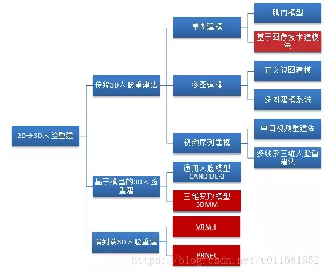
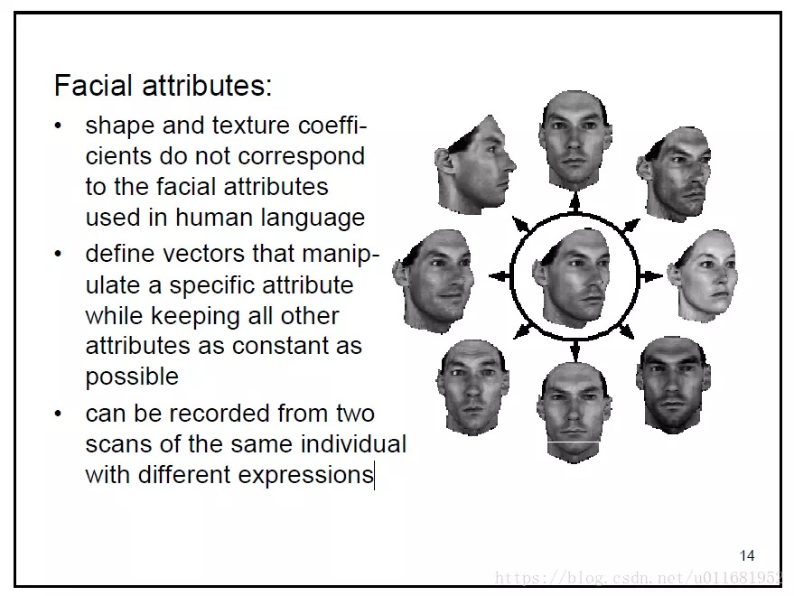
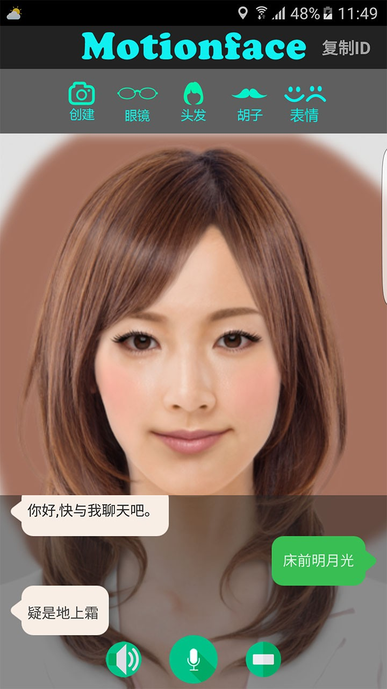
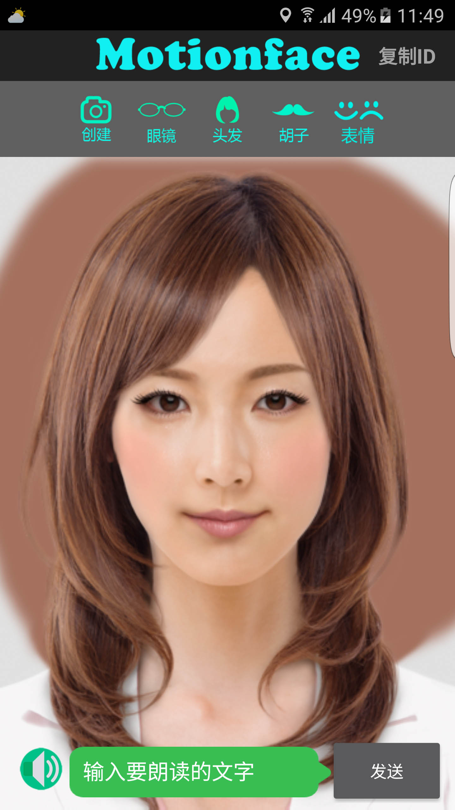
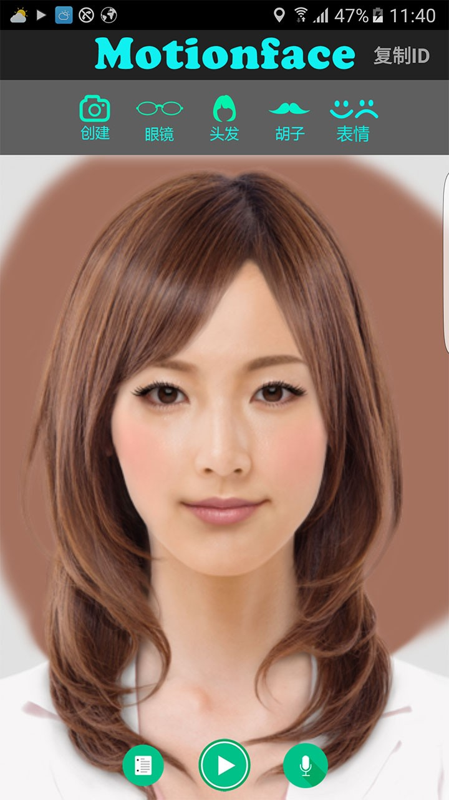

人脸重建活体技术实现原理简介+ 查看更多
人脸重建活体技术实现原理简介
+ 查看更多
日期：2019-12-01 20:35
浏览量：9999+
单纯从技术上讲，如果仅仅通过一张相片制作人脸制作眨眼摇头点头张嘴效果的功能，就必须用到3D人脸重构。如果要用到3D人脸重构技术那么就必须要用到AI。 在过去20年中，研究者们在3D人脸重建方面贡献甚多，2D人脸图像到3D人脸重建方法也是多种多样，硬要为其做个分类，大致如下图（当然可能不太全面）：
人脸重构一些方法

表情渲染
motionface 是基于三维变形模型的AI人脸重建，为什么选用这个方法，因为如果使用NET方式一般的设备是无法承受运算中所带来的开销。如果三维变形模型的人脸重建，就相对简单的，普通一些游戏画面使用比较广泛了，技术也相对成熟。本软件是将AI与与三维变形模型融合，使人物面部一些元素过渡自然，看起来你更加逼真。
motionface 的 下载地址
我们拿一张明星的图片做实验，软件为安卓软件，运行手机为普通的安卓手机。
选择一张原图，导入图片质量无任何损失而且人物的模型是带背景的，看起来更真实。

在来看看，人物闭眼的效果，闭眼是有动画的，动画非常细腻。
接着看人物说话效果，人物说话是可以配置录音文件wav音频的。这段配音是有背景音乐的，匹配上去嘴型也是完好吻合。
 最后来与上一张对比一下嘴型的变化，这时牙齿露出来的稍微多一些，在明星的 烈焰红唇照耀下效果过渡非常自然，而这几颗假牙是软件自动生成，并且根据人物嘴型与嘴巴演示做了颜色匹配，看起来非常自然。
这个效果非常棒，建议看一下视频才知道具体效果，视频已经上传，可直接在线观看。